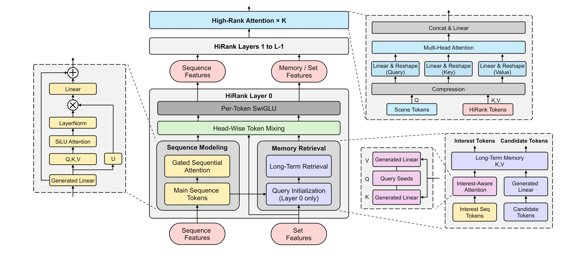
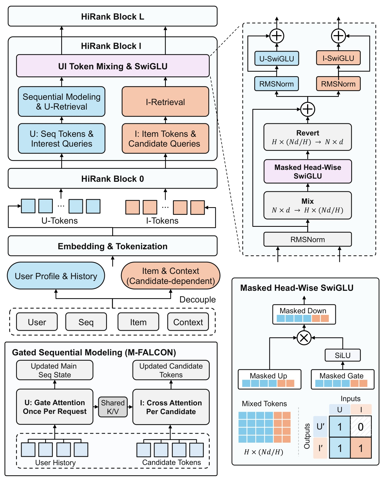
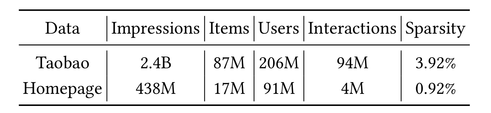
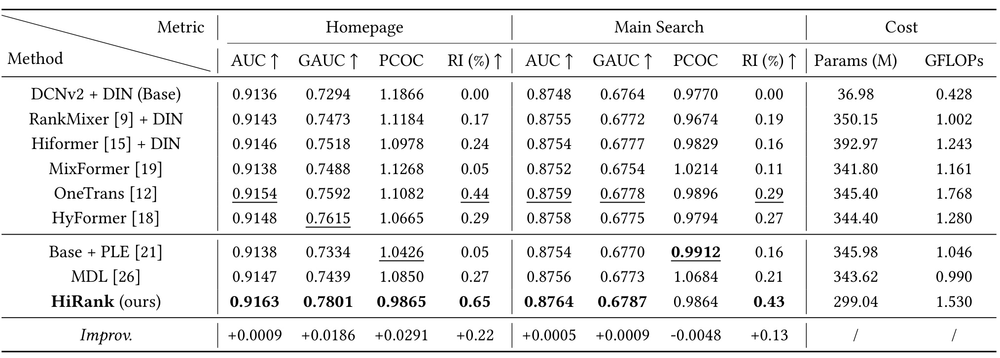
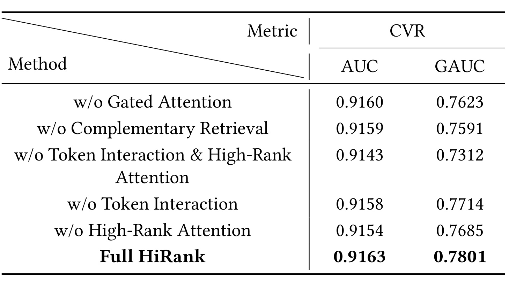
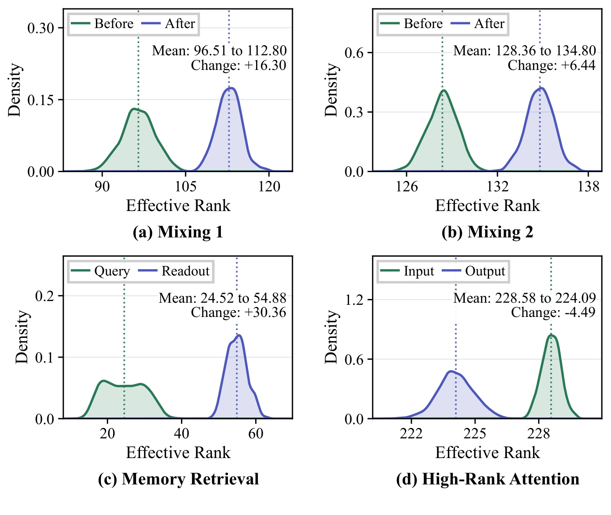
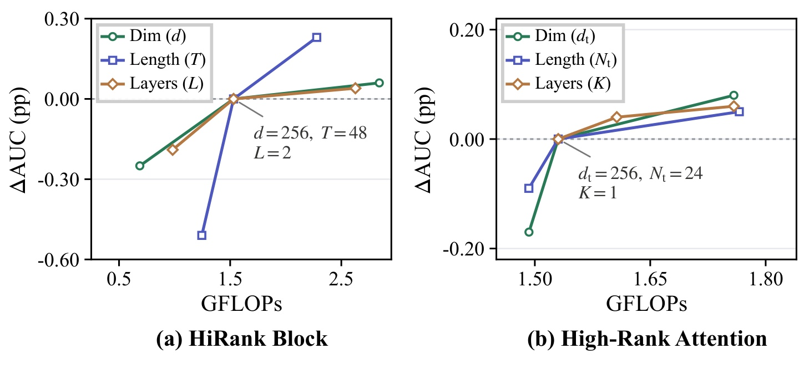
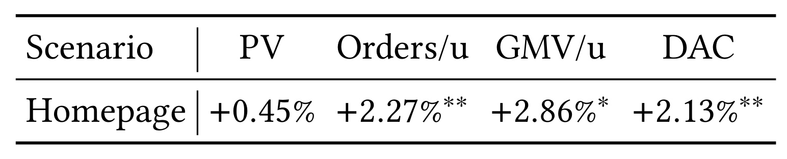

HiRank：以主序列、长期记忆与场景复合视图统一工业精排
HiRank 研究工业推荐精排如何联合处理行为序列、异构特征和多场景差异。Ao Zhang、Haochuan Li、Boya Du 的主机构为阿里巴巴集团，合作作者来自中国人民大学和中国科学院自动化研究所。论文于 2026 年 10 月 26 日以预印本公开，本文于 10 月 28 日核验，唯一论文入口为 Unified Heterogeneous Feature Interaction via Effective-Rank Scaling for Recommender Systems。本轮未核验到本文独立代码或项目链接；页内 ACM 2017 会议模板不构成正式接收证据。
先把行为序列压缩、再交给特征交互模块，会限制后续层重新访问事件级证据；而序列与非序列信号具有不同统计性质，直接施加同质注意力也可能效率不足。工业精排需要在保留这些差异的同时交换信息，并适应不同流量场景。
1. 背景和问题
论文所处的任务是电商多场景精排，核心预测目标为购买转化率，购物车添加作为辅助监督。模型面对一个用户和一个候选商品，结合用户历史、商品属性及请求上下文，估计多个转化相关结果的概率。这与只预测点击的设定有重要差别：购买正反馈更加稀疏，某些流量入口单独积累的标签不足以支撑大模型。因此，淘宝首页模型使用全平台用户商品样本学习共享规律，同时又必须适应首页、主搜和其他小场景在流量、用户意图和特征相关性上的差异。共享训练数据有价值，也会带来把源场景偏好错误迁移到目标场景的风险。
长期以来，精排架构常把行为序列建模和特征交互作为两条分别发展的路线。前者从 DIN 的候选相关兴趣聚合、DIEN 的兴趣演化走到更长行为的压缩与查询，目标是找到当前商品相关的历史证据。后者从因子分解的二阶关系、DCNv2 的显式交叉走到多头 token mixing，目标是组合用户、物品、上下文等不同字段。两者都能单独改进，但工程上常通过“先编码、再交互”的接口连接：序列模块先输出固定维度的向量，后面的交互模块只看到这份摘要。即使后层发现某个新特征组合有意义，也无法在同一次前向中重新查看哪条历史事件支持它。
HiRank 把这个接口限制作为主要切入点。它并非认为历史不能压缩，而是区分哪些信息需要保留为事件级状态，哪些可以作为长期外部记忆供检索，哪些适合形成语义分组特征。主行为序列在层间持续更新；几类长期历史先投影成记忆，前向过程中保留原始事件表示，通过不断变化的查询重新读取。这样一来，早先交互层得到的特征上下文可以影响下一层如何检索历史，而不会要求所有长期行为一起进入主干自注意力。这个分工体现了工业预算的约束：统一信息交换不等于把全部历史事件都变成同一种昂贵的全连接序列。
论文同时关心查询的表示多样性。相对静态的画像特征可以构造长期检索查询，但如果跨用户的查询集中在少量方向，模型就可能只沿有限的视角读取历史。HiRank 在首层让可学习查询种子读取主序列，形成随行为变化的兴趣查询；同时保留由候选商品条件化的另一条检索路径。前一路希望找到用户当前更广泛的兴趣，后一路寻找与本候选有关的证据。两条路径访问相同的长期记忆，却具有不同查询和参数，并在后续混合后继续演化。作者用有效秩诊断这种表示变化，但这不是在理论上证明查询方向越多，转化预测就必然越好。
异构特征的性质也限制了直接套用语言模型的共享注意力。语言词元通常来自共同词表，精排特征却可能分别表示品类、价格、用户状态、请求入口或不同时间尺度的行为。它们的信息密度、稀疏性和可共享参数程度都不相同。注意力能够按输入选择依赖关系，但单个注意力聚合本身并不能提高值矩阵的代数秩，纯注意力堆叠还可能使表示趋同；实际模型中的残差、前馈和多头变换又会改变这种分析条件。因此本文把注意力和 token mixing 结合，是一种有诊断依据的架构设计，不能简化成“注意力对推荐无效”或“混合操作必然修复低秩”。
在联合骨干之后，还需要回答场景差异如何进入最终预测。若将所有场景都压成同一份共享向量，可能忽略不同入口需要的证据；若为每个场景复制大模型，又会牺牲跨场景共享和服务效率。HiRank 使用由场景属性条件化的查询，从最终 token bank 中聚合紧凑表示，再通过不同投影构造多个复合 token。每个复合视图都能访问整个压缩状态，而不是把输入机械切成互不相通的小块。随后注意力在这些视图之间建模高阶关系，最后进入不同任务预测头。多场景适应和多任务预测在这里是相关但不同的两个维度。
另一个不能忽略的约束是同一请求中有许多候选商品。用户历史在候选之间相同，若每个候选都重复计算全部主序列和用户特征，成本会随候选数扩大。本文另外描述用户物品解耦变体，把用户侧处理设为候选无关、允许用户信息流向物品侧，同时禁止物品信息写回共享用户状态。这个约束牺牲了普通骨干中的一部分双向反馈，换取请求内复用。它是有明确依赖条件的可选变体，不能把一次主序列计算的共享原则直接等同于所有模块都能缓存，也不能把结构可复用写成已经测得某个吞吐倍数。
阅读本文时，应分别评估三类证据。第一，完整模型在相同特征和调参预算下是否比竞争架构预测更好；第二，消融和表示诊断是否支持作者对各模块的解释；第三，线上转化收益与真实服务成本是否有足够公开细节。论文提供两个工业流量源的离线主表、模块消融、有效秩分布、扩展实验及首页线上指标，证据覆盖较完整，但没有公开原始生产数据和完整代码。离线排序、概率校准、矩阵运算成本与线上用户购买是不同对象，任何一个结果都不应替其他环节作保证。
对于推荐研究者，最有价值的问题因此是如何设计反复访问证据的接口。主序列状态、长期记忆、候选读取和场景聚合承担不同职责，理解这些输入输出，比仅记住“统一架构”或“高秩注意力”的名字更有帮助。对于个性化大模型或检索增强系统，可以借鉴只读记忆与演化查询的区分；但本文没有验证语言生成质量、通用 Agent 能力或跨业务推荐效果，这些都属于需要独立验证的迁移方向。
2. 方法
2.1 特征、主序列与长期记忆的表示
HiRank 的输入是用户与候选相关的非序列字段，以及用户多种历史行为。非序列字段和池化的行为摘要按语义分组，每组独立投影为相同宽度的 token；用户属性、商品属性和请求上下文可以保留不同的变换参数。单独的候选状态由商品特征初始化。这里把 token 标成用户侧或物品侧，最初只表示槽位归属：在普通联合骨干中，经过混合后这些槽位可以携带另一侧的信息，不能仅按名称判断它是否能跨候选缓存。
符号解释：$u,i$ 表示用户和候选商品，$F_{u,i}$ 为非序列特征，$S_u$ 为行为历史集合，$\mathcal T$ 为购买、加购等任务，$\Theta$ 为参数，$\widehat y$ 为正反馈概率，$\mathcal G$ 是语义分组，$\mathcal F$ 是投影后的特征 token bank。式中任务预测属于原文式一，token 化对应式二；它们定义整体输入输出，不意味着所有历史都被池化进 $\mathcal F$。
主序列被逐事件投影为 $S\in\mathbb R^{T\times d}$，在每个 HiRank block 中更新；选定的长期点击、加购和购买历史分别形成 $M_j\in\mathbb R^{T_j\times d}$，并携带有效长度掩码。长期记忆在单次前向中保持只读，查询则逐层更新。这样既保留事件级证据，也避免每层重新编码全部长历史。训练时这些输入投影仍是模型参数的一部分，“只读”指本次前向的事件状态不被交互层回写，不能理解成部署后永久冻结的外部数据库。
2.2 HiRank Block 中的双路检索与混合

Figure 1 中间的主干从主序列和语义特征进入首层，左下分支进行门控序列建模，右下分支初始化长期检索查询并读取记忆；两者的输出随后与其他特征一起经过按头混合和逐 token 前馈。层间箭头意味着下一层接收到的不只是最后预测向量，还包括更新后的主序列状态、语义槽位和检索查询。图左放大框给出门控注意力的局部信息流：同一归一化输入投影出查询、键、值与门，聚合结果经归一化后与门相乘，再投影和残差相加。图中的独立支路使当前局部事件特征能够控制聚合历史如何进入更新，而不是把注意力权重直接当成唯一的信息选择器。
右下放大框区分兴趣种子、主序列读取和长期记忆查询。首层兴趣查询从主行为得到用户相关变化，候选查询则从商品条件出发，两条路径访问同一组长期记忆，得到不同视角的读出。右上框是最后的场景聚合与高阶交互：场景 token 查询所有骨干 token，将结果压缩后分别投影成查询、键、值，再执行多头注意力。因而整图不是把不同模块只串行连接一次；前面的混合会改变后续查询，后面的场景模块又决定哪些共享证据进入最终任务头。这里虚线框都是原图同一架构的细部展开，不代表四张无关图被人为拼接。读图时尤其要区分长期记忆保持不变与检索输出反复更新，后者才是跨层反馈的载体。
门控主序列建模借鉴 HSTU 的点式聚合注意力。先对主序列做归一化和线性投影，再仅对门分支施加 SiLU；查询、键和值保持线性投影输出。聚合权重不受 softmax 单位和约束，而由 SiLU 转换的点积决定，最后通过显式乘法门整合局部与历史信息。
符号解释：$S$ 为 block 输入主序列，$Q,K,V$ 为查询、键、值，$U$ 在更新式中表示已激活的门，$N$ 是有效主序列长度，$\odot$ 为逐元素乘法。第一项对应原文式三，第二项对应式四；多头索引为简洁而省略。候选状态使用自己的查询与门读取同一份由 block 输入产生的 $K,V$，共享投影和归一化参数，但候选不贡献键和值。主序列先得到更新，不代表候选读取的是重新投影后的 $S'$，这一计算顺序直接影响实现和复用判断。
首层的可学习种子先注意主序列形成兴趣查询，按长期记忆类型分组；更新后的候选状态为另一条路径提供查询。之后各层不再重新生成种子，而使用上一层检索输出经过混合与逐 token 变换后的状态继续查询。
符号解释：$M_j$ 是第 $j$ 类只读长期记忆，$Q_{u,j}$ 为兴趣路径查询，$Q_{i,j}$ 为候选路径查询，$R_{u,j},R_{i,j}$ 为两种读出，分别具有路径和层专属参数。原文式五不要求两种查询相同，也不把兴趣读取和商品读取的结果简单视为重复特征。主序列能够提供即时行为方向，长期读出补充更远的历史，候选条件帮助选择当前商品相关事件；这一分工的有效性仍需消融验证。
符号解释：$R$ 汇集不同记忆的双路读出，$c'$ 为更新候选状态，$\operatorname{Concat}$ 沿 token 轴连接；$\operatorname{Mix}$ 把各 token 对应通道片段重组到同一头，$Z$ 为混合后的 token，$\operatorname{Revert}$ 还原槽位；$l$ 为 block 编号。原文式六、七中的头级 SwiGLU 在 token 间交换同组通道信息，之后的位置专属前馈再在每个 token 内重组通道。残差维持对齐关系，下一层按原槽位取出主序列、检索查询及其他特征。跨层查询更新使本层发现的特征关系能影响下一轮记忆访问，这是对一次压缩后不再访问历史的具体改动。
2.3 场景压缩与高阶复合 token 交互
骨干输出仍包含多种来源的 token。若直接将所有 token 拼成超长向量，再映射成高阶交互的多个视图，映射矩阵会随骨干 token 数扩大。HiRank 因此先用样本场景信息初始化场景查询，对最终共享证据做一次交叉注意力，并将读出展平为紧凑状态。场景属性通过“查询什么”进入共享表示，不需要为每个场景完全复制骨干。
符号解释：$Q_s$ 是场景条件化查询，$X^{(L)}$ 是最后一层 token bank，$X_s$ 为聚合读出，$d_c$ 为压缩状态宽度。原文式八强调查询来自场景、键和值来自共享骨干。压缩是有损接口，模型需要学会选择对当前场景重要的证据；它可以减小后续投影矩阵，但不保证任意 $d_c$ 都能保留全部决策信息。
符号解释：$H_k$ 为第 $k$ 个高阶交互块的紧凑状态，三个投影分别学习查询、键和值，$N_t$ 个复合 token 的宽度为 $d_t$，每个投影矩阵大小为 $d_c\times(N_t d_t)$；$\operatorname{MHA}$ 为多头注意力。式九中的每个复合 token 都由完整 $H_k$ 通过不同参数产生，不是把向量的互斥区段切成 token。这让不同视图可以选择相同输入中的不同组合，随后在视图间建模依赖。所谓高秩的动机是多样化投影，而非在损失里直接最大化秩；最终谱是否提高仍由数据和训练决定。
符号解释：$H_K$ 是高阶块最终状态，任务专属 $\operatorname{MLP}_t$ 输出 logit，$y_t$ 是真实标签，$\lambda_t$ 为任务权重，$\operatorname{BCE}$ 为二元交叉熵，$\mathcal L_{\rm reg}$ 为参数正则。式十把购买和加购监督作用到共享骨干，推理时只保留目标所需预测头即可按任务出分。论文没有给出所有任务权重与标签构造细节，不能据此断言辅助任务在不同业务上总有正迁移。
2.4 可选用户物品解耦

Figure 2 以蓝色表示用户侧流、橙色表示物品侧流。左下的主序列注意力每请求只运行一次，产生的历史键和值被不同候选读取；候选交叉注意力按商品分别计算。左上多层结构继续区分序列与兴趣查询、候选与商品条件查询，说明共享并不止发生在第一层输入编码。右侧按头混合先重组通道，再通过带掩码的上投影、门和下投影，最后还原槽位并分别做用户和物品的前馈残差。这里的掩码必须贯穿兼容的投影分区，而不能只在最后输出置零一次；否则候选信息仍可能经隐层混入用户状态，使跨候选复用失效。
原图右下矩阵把这一点表达得最直接：用户输出可以读取用户输入，不能读取物品输入；物品输出可以读取用户和物品输入。因此商品仍能利用多层共享用户证据，但无法反向改变被所有商品共用的用户状态。和普通 HiRank 的双向混合相比，这确实改变了依赖结构，不应只被称为无条件等价的缓存优化。若请求上下文某些字段随候选而变，就要归入橙色一侧，不能因字段名称包含“用户”就放进共享流。图中给出了清楚的计算复用设计，但论文主表没有分别报告该变体的质量、请求时延、吞吐和候选数扩展曲线，不能从蓝色“每请求一次”的标记推导具体加速倍数。
符号解释：$D$ 为原文式十一的依赖矩阵，行表示用户、物品输出，列表示用户、物品输入，零表示禁止的信息流。用户侧包括主序列、兴趣检索路径和请求共享特征，物品侧包括候选、候选检索路径、商品属性、用户商品交叉及候选相关上下文。训练与推理都必须遵守同一屏蔽语义；若训练时允许物品写回用户、部署时再缓存用户状态，二者就不再实现同一模型。该变体展示的是以受控方向性交互换取复用的设计空间，其收益需要结合精度和系统测量共同评价。
3. 实验结果
3.1 数据、预测目标与指标口径

Table 1 用两行描述全平台和首页数据的近似每日规模。Taobao 行有二十四亿曝光、八千七百万物品、两亿零六百万用户和九千四百万购买正样本，正样本与曝光比为百分之三点九二；Homepage 行有四亿三千八百万曝光、一千七百万物品、九千一百万用户和四百万购买正样本，比值为百分之零点九二。这里的 Interactions 明确指购买正反馈，不是所有点击、所有历史事件或一般用户交互数。把百分之零点九二写成用户购买率也会改变分母：它对应购买正样本相对曝光，而用户层面的交易指标在后面的线上实验采用另一种定义。
首页标签更稀疏，是联合全平台训练和使用加购辅助任务的实际动机。但表格只提供每日近似数据统计，没有给出完整训练天数、全部行为窗口、过滤条件和可下载切分；因此不能把单日曝光乘上自行假设的天数当成训练总样本量，也不能仅由用户数推断曝光之间相互独立。本文离线主要报告购买 CVR，辅助加购提供训练信号，不能把后文 AUC 当成点击率任务的直接测量。表中规模说明真实生产背景，也意味着其他研究者难以用公开数据严格复现相同分布，这一点应与模型结构是否可实现分开评价。
所有模型使用相同输入特征、行为历史和训练数据，以验证集 CVR AUC 选择超参数，并声称使用可比的稠密参数和调参预算。默认宽度为二百五十六，主序列最多四十八事件、四组长期记忆和三十二个 mixer 头，骨干两层；高阶阶段压缩宽度为一千五百三十六，二十四个复合 token，每个宽二百五十六，高阶块一层。参数预算相近并不意味着 GFLOPs 相同，后文主表同时列出二者正是为了展示不同计算路径的差异。
全局 AUC 衡量跨合格样本的区分能力，GAUC 先在用户内计算再按用户评价权重加权。PCOC 越接近一说明预测总量与观测转化更一致，不能直接等同于完整概率校准误差。论文沿用下式计算相对改进：
符号解释：$\operatorname{AUC}_{\rm base}$ 是各场景 DCNv2 加 DIN 基线的全局 AUC，减去零点五后比较超越随机区分的幅度。原文式十二得到的是特定归一化比率，不是 AUC 的相对增幅，更不是百分点。例如首页从零点九一三六到零点九一六三，绝对增加零点零零二七，对应零点二七个百分点，而表中的 RI 约为百分之零点六五。跨表讨论必须说明所用分母。
3.2 离线主结果与成本：优势集中在哪些指标

Table 2 将首页、主搜和成本并列。首页 HiRank 的 AUC 为零点九一六三、GAUC 为零点七八零一；相对各自最强基线，分别多零点零零零九和零点零一八六。前者最强对手为 OneTrans，后者为 HyFormer，因此不能把两个改变量都写成对同一基线的增益。主搜对应 AUC 为零点八七六四、GAUC 为零点六七八七，比最强基线各多零点零零零五和零点零零零九。两个场景的区分指标点估计均领先，首页用户内排序提升更突出；论文没有给出这些离线差异的多种子标准差或置信区间，不能仅凭大样本背景补写显著性。
校准代理存在明确反例。首页 PCOC 为零点九八六五，距一为零点零一三五，优于最佳基线 PLE 的零点零四二六偏差，改善零点零二九一；主搜 HiRank 为零点九八六四，距一为零点零一三六，而 PLE 为零点九九一二，距一仅零点零零八八。表格 Improv 行因此写负零点零零四八，意味着主搜 PCOC 比最优基线更差。AUC 和 GAUC 都高不能消除这一校准差异，也不能把“两个场景所有指标最好”作为本文结论。表中给出的不同指标，恰好允许检查排序和总量偏差是否一致改善。
成本列也应结合参照对象阅读。HiRank 有二亿九千九百零四万稠密参数，单候选前向矩阵计算为一点五三零 GFLOPs；OneTrans 为三亿四千五百四十万参数、一点七六八 GFLOPs。HiRank 相对它参数和计算都较低，但相对 RankMixer 加 DIN 的一点零零二 GFLOPs、MDL 的零点九九零和生产基线的零点四二八，计算仍更高。生产基线只有三千六百九十八万稠密参数，更不属于严格同模型容量对照。因此表格支持“在报告的可比大模型范围内有较好的精度成本取舍”，不能支持“比所有基线都省计算”。GFLOPs 统计也只涵盖矩阵前向估算，不是服务时延、尾延迟或整请求 GPU 时间。
作者用同样特征和调参预算尽量控制比较条件，降低了单纯更换输入的混杂，但不同架构仍有参数量、运算量和模块容量分配差别。没有公开训练日志与完整配置时，最稳妥的解读是报告协议下的性能点估计，结构贡献需要结合下面的消融，而不是把所有优势都归因于某一个被命名的子模块。
3.3 模块消融：替换和去除并非同一种对照

Table 3 的前两行使用 DIN 风格注意力替换门控序列建模或互补长期检索，后面三行则去除 token 交互、高阶注意力或二者。这些对照改变的条件不同：替换仍保留一种行为聚合能力，去除则让剩余表示直接进入其他模块或预测头。完整 HiRank 的 AUC、GAUC 为零点九一六三、零点七八零一；门控注意力替换后为零点九一六零、零点七六二三，互补检索替换后为零点九一五九、零点七五九一。GAUC 的下降比 AUC 更明显，支持行为依赖和多视角历史读取对用户内区分有用，但并没有隔离出“兴趣查询来源”这一个因素的独立效应。
去掉 token 交互而保留高阶模块时，AUC 为零点九一五八、GAUC 为零点七七一四；去掉高阶模块但保留完整骨干时，分别为零点九一五四、零点七六八五。两者都比完整模型低，说明后层复合视图不能完全替代前层异构信息交换，前层交换也没有完全代替场景高阶处理。一起去掉时下降最大，来到零点九一四三和零点七三一二，绝对损失为零点零零二零、零点零四八九。这与作者将行为证据提取和异构交互视为互补环节的解释一致。
不过，联合去除的损失不能机械相加或用于估计每个模块的因果贡献比例。去掉模块同时改变参数、深度和非线性容量，论文没有报告每个消融的等参数替代或完整计算成本；表中也没有逐种子区间。因此可得到的是“这些组合在当前设置下有帮助”的经验支持，而不是模块之间可加的收益定律。后续复现应尽量保留容量与训练预算，再只替换某个信息通路，尤其要区分候选条件读取、主序列兴趣查询以及每层反馈各自贡献。表格值得完整保留，正因为它允许读者看见替换语义和剩余模块，而不仅看到一串统一的去除标签。
3.4 有效秩诊断：增加多样性与保留多样性
作者使用熵有效秩描述表示矩阵的奇异值谱。每次记录的张量先沿前导维展平、独立抽样最多二百五十六行，再做列中心化。这个过程有明确的采样上限，诊断值与矩阵如何展平、在哪个位置记录有关，不能直接拿去比较任意两个模型的全部表示能力。
符号解释：$A$ 是非零、列中心化后的表示矩阵，$\sigma_j$ 为正奇异值，$p_j$ 归一化奇异值而非其平方。原文式十三把谱的熵指数化；少数方向占主导时有效秩较低，质量较均匀分布时较高。它不同于数值矩阵秩，也不是直接最大化的训练目标，更不能由其大小单独判断 CVR 精度。

Figure 3 合并三百五十四个对齐训练步骤的诊断分布，横轴是有效秩，纵轴是密度，虚线标出均值。前两个面板中，主序列经过完整混合块后均值从九十六点五一升到一百一十二点八零，以及从一百二十八点三六升到一百三十四点八零。第三个面板把长期记忆查询和读出比较，均值从二十四点五二升到五十四点八八。这些变化说明在当前抽样和记录方式下，混合后的序列、记忆读出比输入具有更分散的谱方向，为“从静态查询和单一摘要中补入行为差异”的设计动机提供支持。
最后一个面板却不是继续增大：高阶模块输入均值二百二十八点五八，输出二百二十四点零九，下降四点四九，约百分之一点九六。作者将其解释为交互精炼时大体保留紧凑状态的谱多样性。因此“High-Rank Attention 每经过一层都提升有效秩”与图不符；方法名称表达设计意图，图中实际观察是前三处增加、最后一处小幅降低。两个面板的数值尺度不同，也不应只按横轴长度或峰的高度比较它们谁更有效。
这项诊断是相关证据，不是谱变化造成 AUC 改善的严格因果证明。图中查询和读出既不同来源又不同变换，混合前后也包含非线性与残差；没有固定谱分布后单独改变其他因素的对照。即使人为增加不相关噪声，也可能改变有效秩而不改善任务。更合理的用途是检查表示是否异常塌缩，并结合 Table 3 的任务指标判断结构是否有用。若要迁移，应该复用相同展平、抽样与中心化规则，同时观察用户或场景切面的效果，不能为追求一个更大的诊断数字而忽略排序和校准。
3.5 宽度、长度与深度的计算取舍

Figure 4 左图分别改变骨干宽度、主序列长度和层数，右图分别改变高阶 token 宽度、数量和高阶块数，其余设置固定。横轴都是估计的完整模型单候选前向矩阵 GFLOPs，纵轴是相对参考设置的 AUC 百分点变化；不能把它误读成只统计某一模块的计算量，或解释为墙钟时间。参考点为骨干宽度二百五十六、序列四十八、两层，高阶宽度二百五十六、二十四 token、一层，总成本一点五三零 GFLOPs。每种颜色的几个点来自受限的一维扫描，不是对任意容量进行充分优化后的最优包络。
在测试范围内，主序列长度影响最明显：九十六事件增加零点二三个百分点，二十四事件减少零点五一个百分点；加宽或加深带来的最高增益不超过零点零六个百分点。由此可以推断在这套数据和参考规模下，保留更多近期事件比继续增加骨干宽度更值得尝试，但不能推出无限延长序列仍然划算。长期记忆与主序列角色不同，长度变化也不等于增加全部历史。对于高阶阶段，把 token 宽度升到一千零二十四、数量增到九十六，在相近计算区间分别提高零点零八和零点零五个百分点；四层高阶块提高约零点零六个百分点。
图中宽度、长度和深度都在部分范围呈现增益，因此论文称其具有有利的扩展表现。但它没有拟合可外推的幂律，也没有展示训练数据规模与参数规模共同扩展，更没有量化设备效率、访存和请求批量对实际延迟的影响。高阶 token 增长后的二次交互成本、长序列 K/V 读取和不同矩阵形状的利用率，都可能使相同 GFLOPs 产生不同服务时间。最有实践价值的结论是容量应分配到有效信息仍不足的位置，再测真实服务约束；不能把这两幅扫描图读成工业精排已经获得语言模型式通用 scaling law。
3.6 线上结果与公开细节的边界

Table 4 只给出首页一行，所有数字为相对生产基线的百分比变化。PV 增加百分之零点四五，每分配用户订单数增加百分之二点二七，每分配用户 GMV 增加百分之二点八六，每日独立购买用户数 DAC 增加百分之二点一三。订单和 DAC 标有双星，表示作者报告的显著性水平小于零点零一；GMV 单星对应小于零点零五，PV 没有星号。星号不能替代精确 p 值、效应区间和样本量，不能把 PV 的正点估计也写成已经显著提升。
正文说明随机化按用户持久分配，实验前确定资格，非排序策略保持不变；Orders/u 和 GMV/u 使用相同分配用户分母与观察窗口，并包括后续没有订单的用户。这与仅在购买用户中计算客单量不同，也避免直接由购买者群体变化解释所有平均收益。作者还补充首页点击用户数增加百分之零点八五，每千曝光订单增加百分之一点八一；它们具有各自分母，不能与每用户订单增长相加，更不能将每千曝光订单写成购买用户数。
这些定义提高了报告的可解释性，但全文没有披露实验持续多少天、分流比例、精确样本规模或置信区间，也没有公开分时走势、不同人群切面、跨场景线上指标和时延数值。用户随机化有助于建立业务因果比较，外部读者仍无法据现有公开信息独立重算显著性或检查长期稳定性。尤其是可选解耦变体没有单独结果行，无法确认线上实验具体采用的结构和复用幅度。因此这里保留作者报告的业务效果和 p 阈值，同时将未披露设计细节列为复现缺口，不把“已部署”扩展成任何相似业务都能达到相同收益。
4. 总结
HiRank 的核心贡献是把几种原本容易被一次性摘要隔开的信息放进可反复交互的骨干，同时保留它们的不同职责。主序列持续更新，长期记忆保持事件表示而由查询反复读取，候选状态从相关商品角度聚合历史，语义特征通过按头混合参与后续查询演化；最终再由场景查询选择共享证据，并以完整压缩状态的不同投影构造复合视图。它不是简单把所有特征接到一个 Transformer，也不是在目标里最大化有效秩。理解各层哪些状态被更新、哪些只读，比直接复用模块名称更能指导实现。
我的判断是，本文最有说服力的证据来自结构、消融和任务结果的相互对应。离线两场景的 AUC、GAUC 都领先，互补检索、token 交互和高阶模块的替换或去除均带来退化，线上还报告了每分配用户交易指标改善。与此同时，主搜 PCOC 负例、高阶有效秩小幅下降和有限范围的容量扫描，使结论保持具体：模型能改善报告设置中的一些重要目标，但不意味着所有指标、所有阶段和所有成本同时变好。对论文名称中的“有效秩扩展”，更稳妥的理解是有谱诊断支撑的架构设计，而不是已证明通用的缩放法则。
迁移到现有精排时，可以先检查当前序列摘要是否真的阻断了后层访问事件证据，再决定是否需要跨层检索反馈。如果当前瓶颈是特征质量或标签口径，增加多层记忆读取未必优先。实现用户物品解耦时，必须以真实依赖关系划分字段和计算，记录共享用户状态是否包含候选信息；否则缓存命中看似增加，实际实现的却是与训练不同的模型。个性化语言模型可以借鉴“只读记忆加演化查询”的接口，但需要另外验证文本质量、记忆一致性和隐私边界，不能引用本文的订单提升来估计其效果。
至少有五项局限需要保留。第一，生产数据和独立代码未公开，本轮无法复现完整训练与线上统计。第二，离线主表没有多种子方差与显著性，较小 AUC 差异的稳定性仍需验证。第三，有效秩是有抽样规则的表示代理，既不保证因果贡献，也不等价于概率校准；主搜 PCOC 已展示目标间可能存在取舍。第四，矩阵 GFLOPs 和稠密参数不包括完整服务成本，解耦变体缺少质量及延迟独立结果。第五，线上未披露周期、分流和置信区间，尚不能判断不同季节、人群和场景下是否持续受益。
后续验证应优先做三件事。其一，在固定参数与训练预算下拆开候选查询、主序列兴趣查询和跨层反馈，确认增益来自访问更多有用证据，还是来自额外容量；这能决定最小可用改动。其二，复用相同展平与抽样规则记录谱，同时按场景检查 AUC、GAUC 和完整校准指标，避免用表示多样性代替业务目标。其三，分别对普通骨干和解耦变体做相同请求、相同候选数的端到端压测，报告均值、尾延迟、显存与质量，再用明确随机化和固定观察窗口做线上复核。如果后续取得线上日志，还应检查收益是否集中在少数高活跃用户，以及资格筛选和零订单用户的保留是否在各组一致；这些条件会影响每用户指标的解释。上述工作均未在本轮执行，本笔记只对原文证据进行阅读、整理和边界分析。